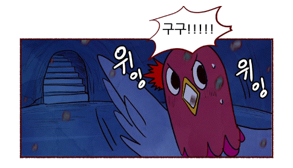
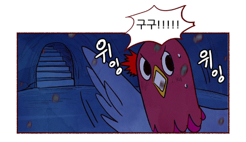

(예시:네이버 웹툰 '고고고')


<책을 먹고 사는 책벌레들의 세상>
책벌레는 애벌레일 때 먹고 자란 책에 따라 사용하는 언어가 달라진다.
크기가 작고 어두울 때 주로 활동해 발견이 쉽지 않지만, 빛이 나는 아름다운
날개와 돋보기처럼 생긴 더듬이를 가지고 있어 다른 벌레와 구분하기 쉽다.
주로 서식하는 곳은 도서관, 서점 등이며 책이 많은 가정의 책장이나 고서가
보관된 박물관 등에서도 찾아볼 수 있다.
도서관
따뜻하고 편안한 분위기
전체이용가. 어린이 대상이나 어른도 즐길 수 있게.
자바스크립트를 통해 일러스트에 간단한 애니메이션을 적용하여 보는이의 관심과 집중도를 높인다.
(예시:네이버 웹툰 '고고고')
